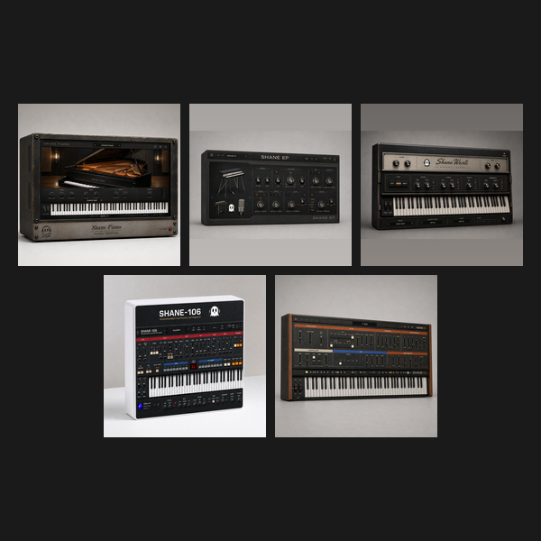

What it doesEvery instrument in the suite - seven of them, one purchase.
Reach for it whenStarting a template. Two keyboards, two synths, and the sampled pianos in one go.
What makes it differentBought separately these come to $245.
One installer. macOS is a single signed .pkg with a checkbox per plugin, so you can install only the formats you use. Windows is one zip with a single Install.bat. One download, one run - not seven.
Every instrument in the suite — seven of them, one purchase. Two keyboards and two synths.
Bought separately these come to $245.
The keyboards are sampled instruments, not FM approximations. Shane Wurli is built from 200A samples, one layer chosen per velocity rather than crossfaded, because the reed does not blend. Shane Piano is a full velocity-layered grand.
KEYBOARDS · Shane Piano acoustic grand piano · Shane Wurli reed electric piano
SYNTHS · Shane 106 programmable polyphonic synthesizer · Shane 60 vintage sampler synth
WHAT'S NEW IN 1.6.2
· Every plug-in in this bundle carries the 1.6.2 fixes. The full list is on each plug-in's own page.
· Fixed a crash that could bring the host down: closing the plug-in window and then removing the plug-in left a timer running on freed data.
· Licence activation fixed: a bundle key now counts one activation per computer instead of one per plug-in, so one key covers five machines as stated.
· Instruments: overlapping MIDI notes on the same key no longer cut each other off, and the sustain pedal now works on the sampler synths, where it had no effect at all.
· Effects: Mix, Bypass and section switches now cross over 10 ms instead of stepping once per block, so automating them no longer clicks.
· Factory presets are now deterministic across 17 plug-ins. They were partial, so a preset kept values from whichever preset you loaded before it.
· Reported latency corrected where it was wrong, which had pulled parallel tracks out of line.
· Every plug-in rebuilt, re-signed and notarized for macOS (Universal) and Windows.
REGISTRATION
· The plug-in runs unrestricted for a 7-day trial from first launch, counted separately for each plugin.
· Your licence key is on your Gumroad receipt and on the download page.
· Paste it into the plug-in once — it needs internet that one time, then works offline.
· Message me on Gumroad if you need it reset for a new machine.
FORMATS macOS AU + VST3 + AAX (Pro Tools), Universal (Intel + Apple Silicon) Windows VST3 + AAX (Pro Tools), 64-bit
INSTALL — macOS 1. Open the bundle .pkg and follow the prompts. 2. Tick the plug-ins and formats you want (VST3 / AU / AAX). 3. Restart your DAW and rescan plugins.
INSTALL — WINDOWS 1. Unzip. 2. Right-click Install.bat and choose "Run as administrator". 3. Restart your DAW and rescan plugins. Install.bat also places the sampled instrument data. Copying the ".vst3" folders by hand will leave the sampled instruments silent.
Signed with a Developer ID and notarized by Apple — no security warnings, no Terminal commands.
Stuck, or something sounds off? Message me — I answer every one.
UPDATES
Buy once, updated forever. Every future build is free to you, and every new instrument joins the bundle. No subscription, no upgrade fee, no re-purchase.
FOLLOW ALONG